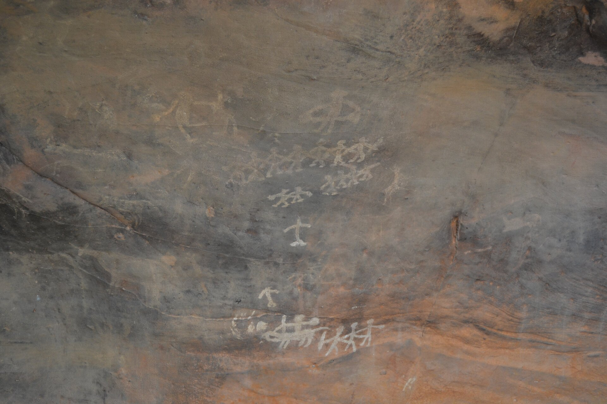

Informacje Ogólne
Krótka historia tanca
Jazz
Hip Hop
Disco Dance
Źródła
Źródła tańca - taniec w prehistorii

Malowidło naskalne ze stanowiska archeologicznego Bhimbetka w Indiach, przedstawiające tańczące postaci, wikipedia.org, domena publiczna
tysadfcaytsuc